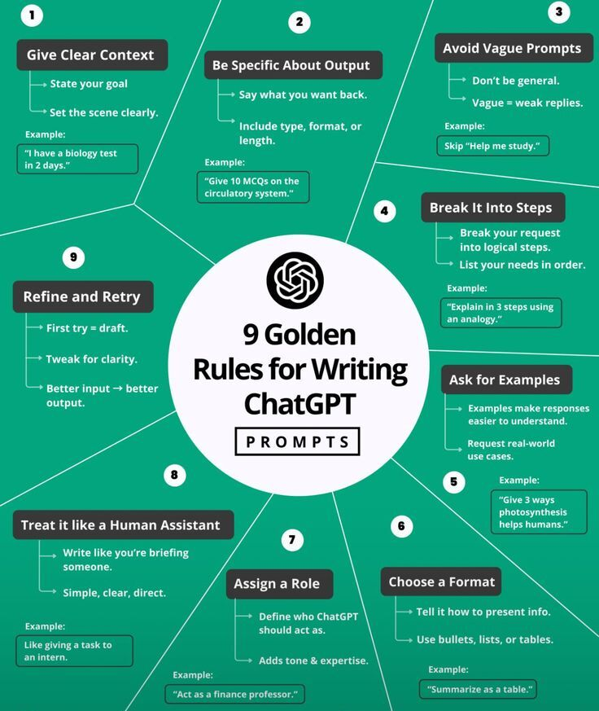
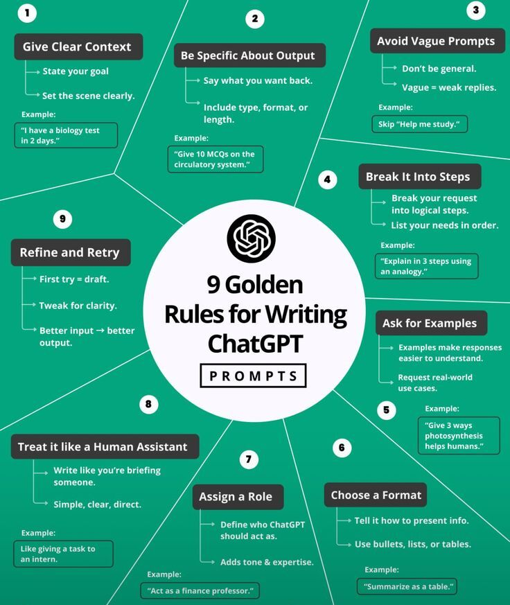

Aprendizaje Basado en Proyectos (ABPr)
Prompt: "Actúa como un experto en pedagogía de proyectos aplicada a ingeniería. Diseña un proyecto multidisciplinario de 8 semanas donde estudiantes de diferentes ingenierías colaboren para resolver un desafío de sostenibilidad
urbana. Incluye: fases del proyecto, entregables específicos, roles por especialidad (civil, industrial, sistemas, ambiental), criterios de evaluación auténtica, y reflexión sobre competencias profesionales desarrolladas."
Pensamiento de Diseño (Design Thinking)
Prompt: "Como especialista en Design Thinking para ingeniería, estructura una actividad completa que aplique las 5 etapas (empatizar, definir, idear, prototipar, testear) para diseñar una solución tecnológica accesible.
Incluye: técnicas específicas para cada etapa, herramientas de prototipado rápido, métodos de validación con usuarios, criterios de evaluación del proceso creativo, y conexión con principios de ingeniería centrada en el humano."
Aprendizaje Basado en Casos para Análisis Matemático
Prompt: "Eres un experto en metodología de casos aplicada a matemáticas para ingeniería. Desarrolla un caso de estudio sobre el colapso del puente de Tacoma Narrows para enseñar ecuaciones diferenciales y análisis
de vibraciones. Incluye: narrativa del caso con datos reales, preguntas progresivas que guíen el análisis matemático, conexiones interdisciplinarias, dilemas éticos de la ingeniería, y evaluación basada en razonamiento matemático
aplicado."
Gamificación en Sistemas Complejos
Prompt: "Como especialista en gamificación educativa para STEM, diseña un juego de simulación para enseñar optimización de sistemas en ingeniería. Incluye: mecánicas de juego (puntos, niveles, desafíos), narrativa
inmersiva con contexto industrial, elementos de competencia y colaboración, retroalimentación inmediata, progresión adaptativa según desempeño, y evaluación de competencias de optimización y toma de decisiones bajo incertidumbre."
Aprendizaje Contextualizado en Problemas Globales
Prompt: "Actúa como experto en aprendizaje situado aplicado a ingeniería global. Diseña una secuencia didáctica sobre cambio climático que integre múltiples disciplinas de ingeniería. Incluye: análisis de datos reales
de IPCC, modelado matemático de escenarios climáticos, evaluación de tecnologías de mitigación, consideraciones socioeconómicas, dilemas éticos globales, y propuesta de soluciones ingenieriles contextualizadas a diferentes regiones
del mundo."
Flipped Learning en Programación y Simulación
Prompt: "Eres un especialista en aula invertida para ingeniería computacional. Estructura un módulo de programación en MATLAB/Python para simulaciones de ingeniería que incluya: contenidos pregrabados con micro-aprendizaje,
actividades presenciales de programación colaborativa, proyectos de simulación auténticos, evaluación formativa continua, autoevaluación de competencias digitales, y transferencia a software especializado de la disciplina."
Aprendizaje Servicio en Ingeniería Social
Prompt: "Como experto en aprendizaje-servicio para ingeniería, diseña un programa donde estudiantes resuelvan problemas reales de comunidades vulnerables aplicando conocimientos técnicos. Incluye: identificación participativa
de necesidades comunitarias, diseño colaborativo de soluciones tecnológicas apropiadas, implementación con supervisión académica, evaluación de impacto social y técnico, reflexión sobre responsabilidad social del ingeniero, y sistematización
de aprendizajes para replicación."
Pensamiento Sistémico en Complejidad Ingenieril
Prompt: "Actúa como especialista en pensamiento sistémico aplicado a ingeniería de sistemas complejos. Desarrolla una metodología para enseñar análisis de sistemas industriales que incluya: mapeo de relaciones causales,
identificación de bucles de retroalimentación, análisis de emergencia sistémica, modelado dinámico de sistemas, evaluación de intervenciones sistémicas, y desarrollo de competencias de pensamiento no-lineal para abordar la complejidad
ingenieril contemporánea."

 
